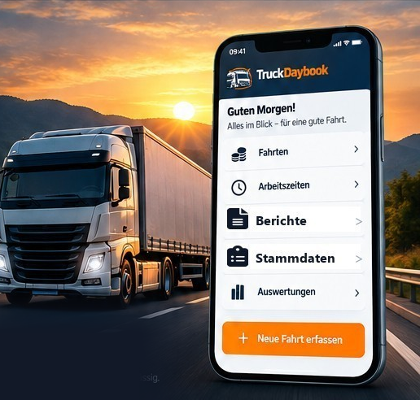
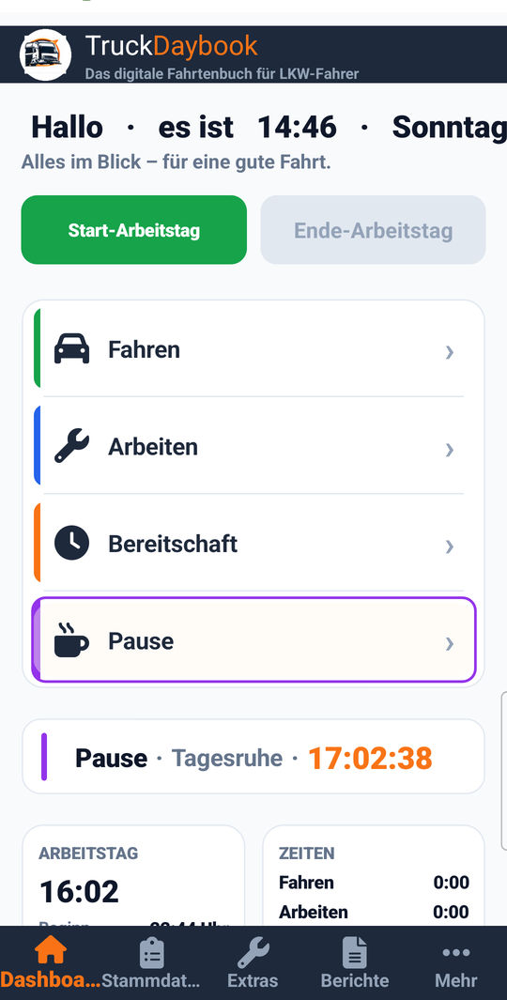
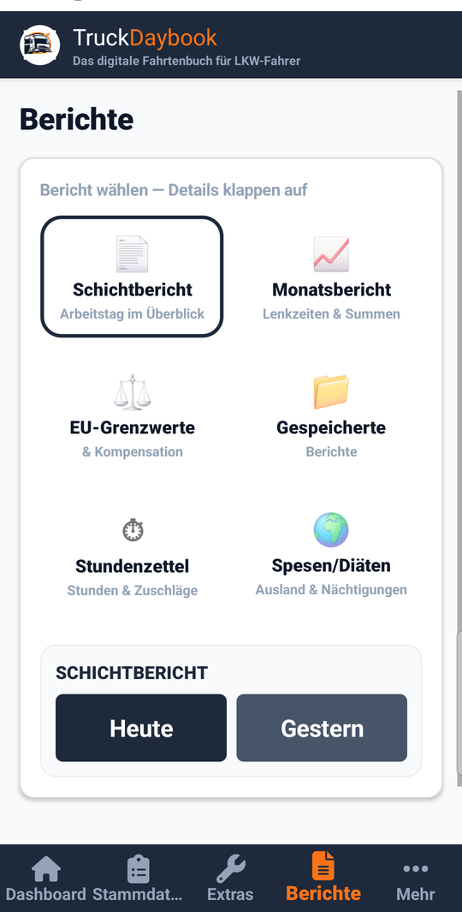
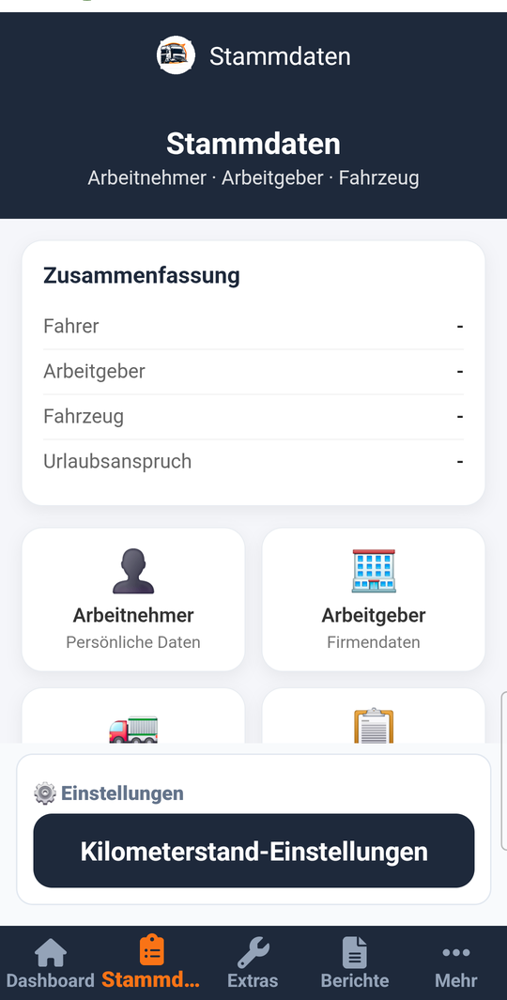

Fahren, Arbeiten, Bereitschaft, Pause – ein Tippen statt Zettelwirtschaft. Deine Arbeitszeiten und Fahrten immer im Griff.

Entwickelt von Fahrern für Fahrer – keine Bürosoftware, sondern ein Werkzeug für die Straße.
Automatische Fahrerkennung per GPS, Tacho- und Kilometerstände, gespeicherte Fahrstrecken.
Arbeitstag starten und beenden, Fahren, Arbeiten, Bereitschaft und Pause per Tippen erfassen.
Schicht-, Monats- und EU-Berichte direkt aus deinen Daten – übersichtlich aufbereitet.
Arbeitnehmer, Arbeitgeber und Fahrzeug einmal anlegen – die App erledigt den Rest.
Direkt aus der TruckDaybook Basis – das siehst du auch auf deinem Handy.



„Mehr Zeit für das, was wirklich zählt – die Straße."
Kein Abo, keine versteckten Kosten – die Basis bleibt kostenlos.
Alles wird lokal auf deinem Handy gespeichert – kein Benutzerkonto nötig.
Über 16 Tester aus der Fahrer-Community probieren die App bereits aus.
TruckDaybook Basis befindet sich derzeit im geschlossenen Play-Store-Test. Sobald die App offiziell freigeschaltet ist, findest du an dieser Stelle den direkten Link zum Play Store.
🚛 Bald bei Google Play verfügbar Android · Play StoreDu willst informiert werden, sobald es losgeht? ✉ Sag mir Bescheid
Tester können die App bereits jetzt über unsere Google-Testgruppe installieren: groups.google.com/g/truckdaybook-tester
Die TruckDaybook Basis direkt im Browser ausprobieren – ohne Download, ohne Anmeldung.
Klick dich durch: Arbeitstag starten → Tätigkeit → Untertätigkeit. Auch auf dem Handy im Browser nutzbar.
Nein. Die Basis-Version ist dauerhaft kostenlos – kein Abo, keine versteckten Kosten.
Ja, komplett. Alle Daten werden lokal auf deinem Handy gespeichert – du brauchst unterwegs keine Verbindung.
Nein. Deine Fahrten, Zeiten und Stammdaten bleiben ausschließlich auf deinem Gerät. Es gibt kein Benutzerkonto und keinen Server.
Nein – TruckDaybook ersetzt keine gesetzlich vorgeschriebenen Aufzeichnungen. Die App ist deine persönliche Ergänzung, um den Überblick über deine Arbeits- und Lenkzeiten zu behalten.
Tritt unserer Google-Testgruppe bei und melde dich über den Play-Store-Testlink als Tester an.
Aktuell entwickeln wir für Android. Eine iOS-Version ist für die Zukunft geplant.